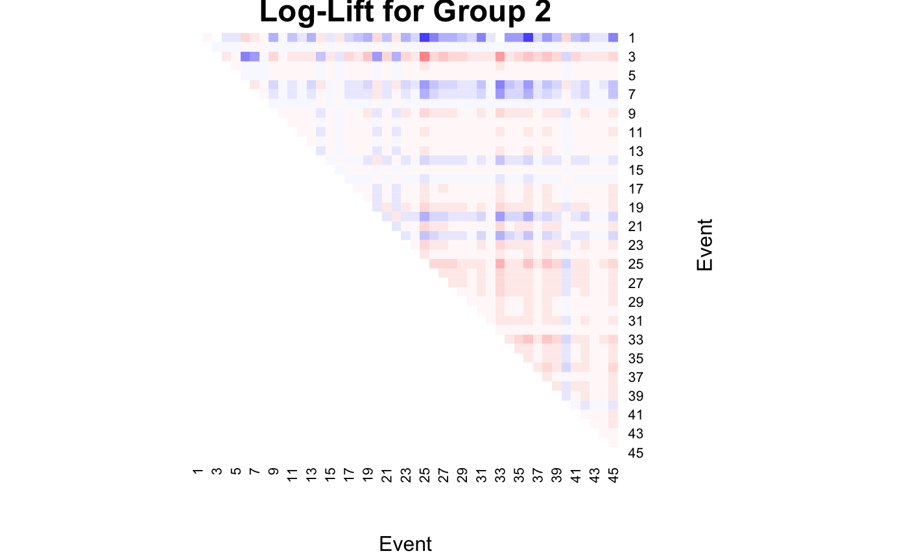

MLTA - Code for Gollini, I. (in press) - A mixture model approach for clustering bipartite networks
Isabella Gollini
12/06/2019
Source:vignettes/MLTA_Gollini_2019.Rmd
MLTA_Gollini_2019.RmdThis code accompany the paper Gollini, I. (in press) “A mixture model approach for clustering bipartite networks”, Challenges in Social Network Research Volume in the Lecture Notes in Social Networks (LNSN - Series of Springer). Preprint: arXiv:1905.02659.
Load the noordin dataset which is available in the manet package.
Load the lvm4net package and set the incidence matrix in the correct format, and give names to the sender nodes.
Heatmap of the data:
heatmap(
X,
Rowv = NA,
Colv = NA,
col = grey(c(0.95, 0.0)),
scale = "none",
margins = c(3, 3),
xlab = "Event",
ylab = "Terrorist"
)We want to fit the model on a range of groups G, from 2 to 4 and the latent continuous latent variable takes value D from 0 to 3.
Fit the mlta
## G=2 G=3 G=4
## dim y=0 2087.159 2187.163 2305.239
## dim y=1 2165.918 2412.358 2732.959
## dim y=2 2402.889 2885.561 3412.363
## dim y=3 2792.768 3409.382 4154.685## G=2 G=3 G=4
## dim y=1 2027.425 2126.788 2300.028
## dim y=2 2137.959 2254.079 2398.944
## dim y=3 2317.978 2446.674 2569.771According to the BIC the best model selected is has two groups (G = 2) and a one dimensional continuous latent variable (D = 1) and common slope parameters across groups (wfix = TRUE).

par(mfrow = c(1, 2))
plot(c(res$b[1,]), xlab = "Event", ylab = "b", pch = 19, main = "Group 1")
abline(h = 0)
plot(c(res$b[2,]), xlab = "Event", ylab = "b", pch = 19, main = "Group 2")
abline(h = 0)
Plot the probability of each sender node to belong to group 1.
plot(res$z[,1], pch = 19,
xlab = "Sender node",
ylab = "Probability to belong to group 1")
abline(h = 0.5, col = "red")
Find and plot the probability that the median sender node in group g has a link with receiver node r.
pig0 <- 1 / ( 1 + exp(-res$b))
matplot(t(pig0), type = "l",
ylim = c(0, 1), ylab = expression(paste(pi[rg](0))),
xlab = "Receiver node (r)", xaxt = "n",
main = "Probability that the median sender node in group g\n has a link with receiver node r")
axis(1, at = 1:ncol(X))
legend("topright", paste("Group", 1:2, sep = " "), col = 1:2, lty = 1:2)We can calculate the log-lift for the best model selected.
heatmap(
loglift[,,1],
Rowv = NA,
Colv = NA,
col = colorspace::diverge_hsv(20),
breaks = seq(-10, 10, by = 1),
revC = TRUE,
scale = "none",
xlab = "Event",
ylab = "Event",
main = "Log-Lift for Group 1"
)heatmap(
loglift[,,2],
Rowv = NA,
Colv = NA,
col = colorspace::diverge_hsv(20),
breaks = seq(-10, 10, by = 1),
revC = TRUE,
scale = "none",
xlab = "Event",
ylab = "Event",
main = "Log-Lift for Group 2"
)